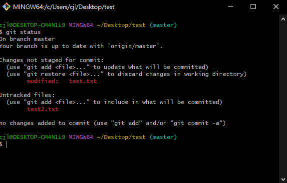
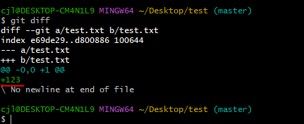
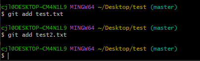
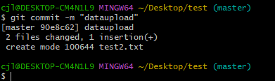

陳杰龍的筆記網站
陳杰龍的筆記網站 主頁
主頁 歸檔
歸檔 分類
分類 其他
其他 關於我
關於我 如何更新GitHub專案
如何更新GitHub專案
Bash到你的專案
如果不知道或忘記如何Bash到專案可參考這篇文章我在我的專案底下新增test2.txt以及修改test.txt的內容
更新專案
利用git status查看出做了哪些變動
git diff可查看已有的文件修改了哪些內容
我在test.txt新增了123的文字內容

再來利用git add 檔案 將修改或新增的文件add進去
如果想全部add進去利用 git add .

提交文件 git commit -m "文件說明"

最後就可以把檔案push上去了 git push origin master

上傳完成之後就可以去GitHub看看你的專案是否有更新了